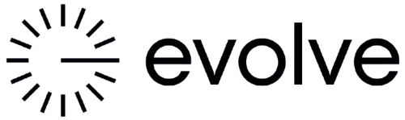

Growing organizations
Teams ready to replace manual workarounds with systems that can evolve as their needs change.

Our focus
We work across business contexts where dependable digital tools can improve services, reduce friction, and make room for growth.
Teams ready to replace manual workarounds with systems that can evolve as their needs change.
Organizations coordinating people, information, and processes across multiple touchpoints.
Product teams looking for a thoughtful partner to extend capacity or move an initiative forward.
Businesses improving how customers discover, access, and interact with their services.
Founders and teams moving from a promising concept toward a validated, usable product.
Organizations modernizing digital experiences while respecting existing systems and requirements.
Start with the operating reality
The same feature can mean very different things in different organizations. We look beyond the request to understand the environment where a solution must succeed.
We consider the needs of customers, front-line users, administrators, and the teams that support the system.
We map the handoffs, exceptions, and decisions around a workflow instead of automating only the visible step.
We account for existing tools, data, infrastructure, policies, and the constraints that shape day-to-day use.
Where digital tools help
Make important services easier to discover and use, with clear journeys across the moments that matter.
Help teams work from timely, consistent information and understand what needs attention.
Reduce friction between steps, roles, and systems while keeping ownership and exceptions clear.
Use maintainable foundations so new needs can be addressed without repeatedly starting from scratch.
We bring the same care to every engagement: understand the context, make the next step clear, and build for the people who depend on the result.
Common questions
We partner across business contexts. Our first step is to understand your organization's goals, users, processes, and constraints rather than assume one industry template fits all.
We can help structure discovery, identify who needs to be involved, and document the decisions and unknowns that should shape the product.
We review the current environment early, identify dependencies, and plan a path that accounts for systems your organization needs to retain.
A challenge in mind?